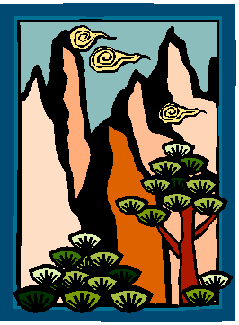

por A. E. Kibrik

El archi es una de las 25 lenguas que se hablan en lo alto de las montañas de Daguestán, una región semiautónoma dentro de la Federación Rusa. Con menos de 1,000 hablantes, el archi es una de las muchas lenguas del mundo en grave peligro de extinción. Sin embargo, el archi todavía se usa a diario, y sus hablantes mantienen una rica tradición de mitología y cuentos orales. Mientras resuelvas este acertijo descubrirás que la gramática del archi es muy diferente de la del español y la de otras lenguas europeas.
Las siguientes son algunas oraciones en archi con sus traducciones (nota: los símbolos «I» y el apóstrofo representan sonidos especiales del archi):
| 1. Diya verkurshi vi. | 'El padre se está cayendo.' |
| 2. HoIn h'oti irkkurshi bi. | 'La vaca está buscando el pasto.' |
| 3. Boshor baba dirkkurshi vi. | 'El hombre está buscando a la tía.' |
| 4. Shusha erkurshi i. | 'La botella se está cayendo.' |
| 5. HoIn borcirshi bi. | 'La vaca está parada.' |
| 6. Diyamu buva dark'arshi di. | 'La madre es dejada por el padre.' |
| 7. Buvamu dogi birkkurshi bi. | 'El burro es buscado por la madre.' |
| 8. Dadamu h'oti irkkurshi i. | 'El pasto es buscado por el tío.' |
| 9. Lo orcirshi i. | 'El niño está parado.' |
Tu primera tarea es traducir las siguientes oraciones del archi al español: